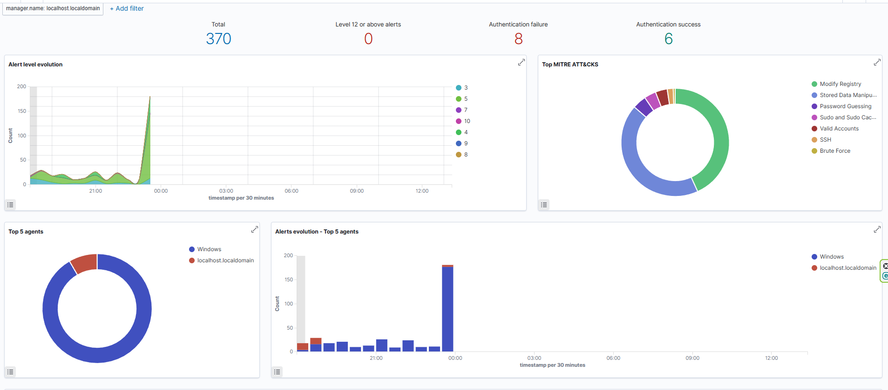
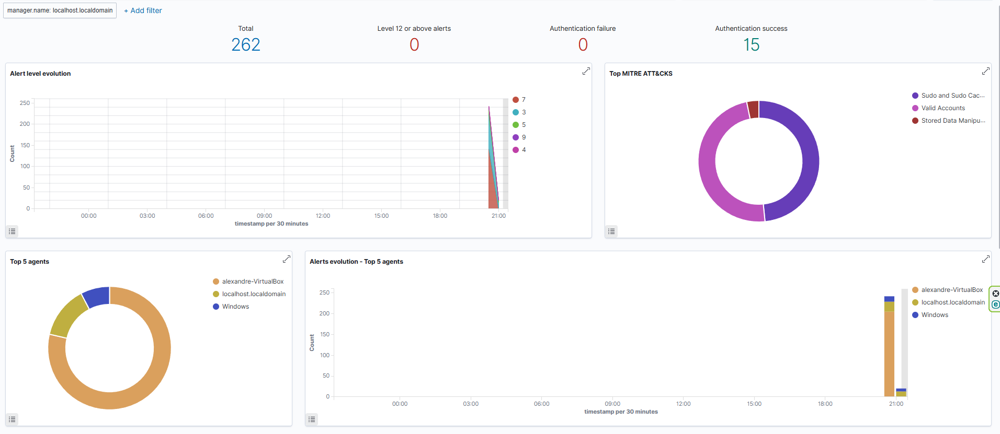
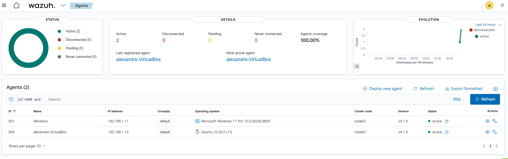
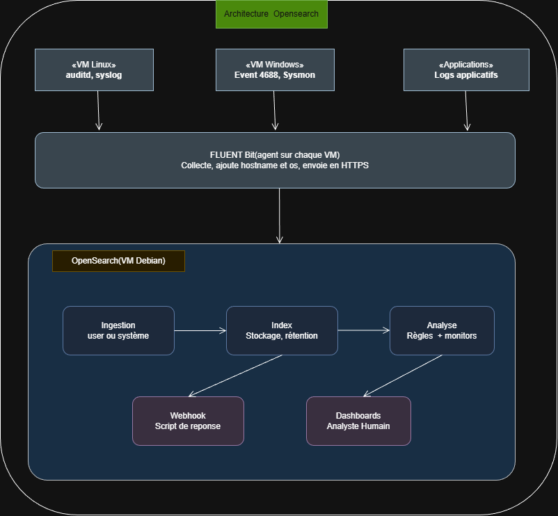
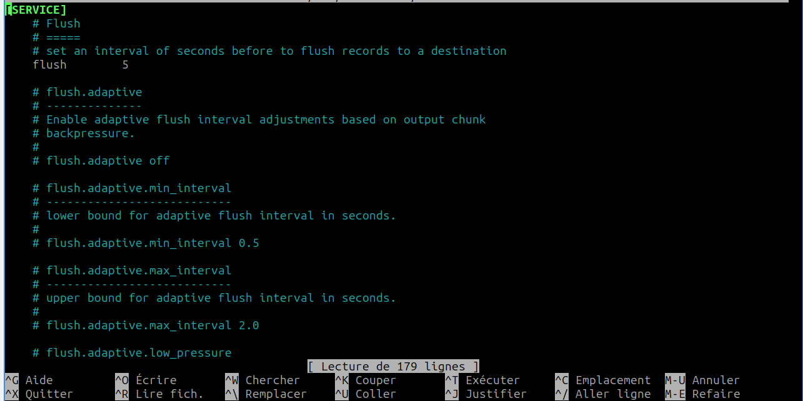
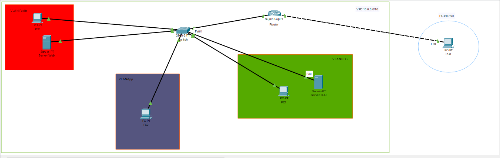
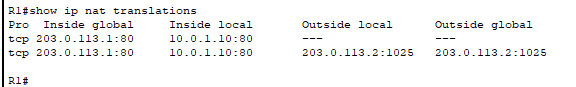

Ingénieur en sécurité réseau, services et application. Je déploie des solutions SIEM open source pour détecter les menaces et rendre les journaux d’un réseau lisibles.
La chaîne que j’ai mise en place en entreprise, de la collecte des logs à la supervision des incidents.
Projets
SIEM open source avec Wazuh
Projet de fin d’études, Lumière Logistique Transport
Surveillance de la sécurité du réseau d’une entreprise de transport, avec collecte et analyse centralisée des journaux.
Déploiement et configuration du SIEM Wazuh et de ses agents sur postes et serveurs.
Règles de détection et alertes pour repérer les menaces et les comportements anormaux.
Tableaux de bord de suivi des incidents en temps réel.
Documentation technique et rapport de PFE.
Wazuh
SIEM
Détection d’intrusion
Analyse de logs

Tableau de bord Wazuh : évolution des alertes par niveau, techniques MITRE ATT&CK détectées et agents les plus actifs.

Seconde vue du tableau de bord, avec les alertes de trois agents (Windows, Ubuntu et le serveur Wazuh).

Agents déployés : un poste Windows 11 Pro et une machine Ubuntu 22.04, tous deux actifs, couverture de 100 %.
Centralisation des logs avec OpenSearch et Fluent Bit
Stage, Dotcom
Collecte, indexation et recherche des journaux de machines Linux sur un serveur central.
Déploiement d’OpenSearch pour l’indexation des journaux.
Installation de Fluent Bit comme agent de collecte et d’acheminement.
Exploitation des logs pour analyser et suivre les événements système.
OpenSearch
Fluent Bit
Linux

Architecture : Fluent Bit collecte les logs des VM Linux, Windows et des applications, ajoute le nom d’hôte et l’OS, puis les envoie en HTTPS à OpenSearch (ingestion, index, analyse, webhook et tableaux de bord).

Configuration de Fluent Bit : section SERVICE, envoi des enregistrements toutes les 5 secondes.Visualisation des logs SSH dans discover.
Infrastructure réseau sécurisée sur le cloud
Mini-projet Cloud, 2025 – 2026
Réseau virtualisé sur le cloud avec segmentation et sécurisation des ressources.
VPC
Segmentation
Cisco Packet Tracer

Architecture VPC connectivité entre un réseau LAN et un WAN

visualisation de l'établissement de connection entre le WAN et le LAN
Chaîne CI/CD automatisée
Mini-projet DevOps, 2025 – 2026
Automatisation des phases de build, de test et de déploiement.
Git
Docker
Pipelines CI/CD
Linux
Système connecté IoT
Mini-projet Objets intelligents, 2024 – 2025
Collecte et transmission de données de capteurs en temps réel.